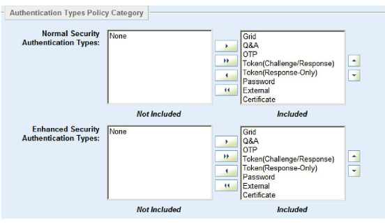

|
IdentityGuard Server 11.0 Administration Guide |
|
IdentityGuard Server 11.0 Administration Guide |
Ensure that Token(Response-Only) is in the Included list of authentication types in your policy. When it is, use of token authentication (with soft tokens or hardware tokens) is available to users and your application.
To ensure that tokens are in the ‘Included’ authentication types list
1. Log in to the Entrust IdentityGuard Administration interface as the administrator.
 On the
Windows computer where Entrust IdentityGuard is installed
On the
Windows computer where Entrust IdentityGuard is installed
Note: Log in as a user with a role that includes these permissions: policyGet, and one of policyCreate, or policySet. See Policy permissions for details.
2. Select Policies on the menu bar.
A list of all policies appears on the List Policies tab.
3. Click the policy (for example, default).
4. On the View Policy page, under Policy Category, select Authentication Types.
5. Click Edit Policy.
An editable version of the settings appears.

6. Move Token(Response-Only) to the Included list, if it is not there already. The Token(Response-Only) option covers response-only soft tokens and hardware tokens.
Normal and Enhanced security authentication types take effect when risk-based authentication is enabled. For more on risk based authentication, see Configuring security risk policies. If you are not using risk-based authentication, only the Normal Security Authentication Types list takes effect.
7. Set the precedence of the soft token authentication method for normal security, enhanced security, or both:
● Select Token(Response-Only) in the Included list.
● Click the up-arrow to move the token option up the precedence list, or click the down-arrow to move it lower in the list.
See Set option precedence for more information about precedence.
8. Click Save Changes.
The View Policy page reappears.